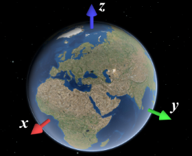
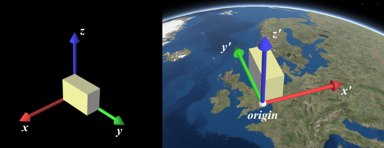

externalRenderers
require(["esri/views/3d/externalRenderers"], function(externalRenderers) { /* code goes here */ });esri/views/3d/externalRenderersSceneView uses WebGL to render the map/scene on screen. The ArcGIS API for JavaScript offers a low-level interface to access the SceneView's WebGL context, and thus enables creating custom visualizations that interact with the scene the same way as built-in layers. Developers can either write WebGL code directly, or integrate with third-party WebGL libraries.
Important notes
This interface is experimental. Please read the following information carefully before using it in a product:
- It is not possible to shield users of this interface from SceneView internal implementation details. Therefore, this interface should be considered not stable and subject to changes in upcoming minor releases of the ArcGIS API for JavaScript.
- Because of the complex nature of WebGL and hardware-accelerated 3D rendering, this interface should only be used by expert developers that are experienced with WebGL or OpenGL.
- Integration with third-party libraries is only possible under certain conditions. Specifically, the third-party library has to be capable of working on the same WebGL context as SceneView, and able to set the relevant parts of the WebGL state in every frame.
- We discourage using multiple custom renderers simultaneously, especially when developed by multiple parties.
Usage
External renderers have to be registered with a SceneView instance:
require(["esri/Map",
"esri/views/SceneView",
"esri/views/3d/externalRenderers"],
function(Map, SceneView, externalRenderers) {
var view = new SceneView({
map: new Map({
basemap: "hybrid",
ground: "world-elevation"
}),
container: "viewDiv"
});
externalRenderers.add(view, myExternalRenderer);
}
);
The second parameter to externalRenderers.add() is an object which has to contain at least the two methods setup and render:
var myExternalRenderer = {
setup: function(context) {
// Executed once after the external renderer is added to a view. You can use this function to allocate all static
// WebGL resources (shaders, buffers, etc.)
},
render: function(context) {
// Executed in every frame to draw geometry to the canvas. Tasks done in this function:
// * Update the state of dynamic resources
// * Set the WebGL state as needed for rendering
// * Issue WebGL draw calls
}
}
The context variable passed to all methods of the external renderer object contains a reference to the WebGL
context, and other information needed for rendering: RenderContext. You can execute WebGL commands directly on the WebGL context:
var myExternalRenderer = {
vbo: null,
setup: function(context) {
this.vbo = context.gl.createBuffer();
context.gl.bindBuffer(gl.ARRAY_BUFFER, this.vbo);
var positions = new Float32Array([0, 0, 0, 1, 0, 0, 0, 1, 0]);
context.gl.bufferData(gl.ARRAY_BUFFER, positions, gl.STATIC_DRAW)
},
render: function(context) {
// bind a shader program etc.
context.gl.bindBuffer(gl.ARRAY_BUFFER, this.vbo);
context.gl.drawArrays(gl.TRIANGLES, 0, 3);
}
}
Requesting redraws
SceneView only renders a frame when there have been changes to the view, for example when the camera has moved or new data is available for display. Frames are always redrawn from the ground up, which means that external renderers will get called in each frame that is drawn.
If an external renderer requires the view to be redrawn, for example because data has changed, it must call externalRenderers.requestRender(view). This will trigger a single frame to be rendered. For continuous rendering, e.g. during animations, externalRenderers.requestRender(view) must be called in every frame from within render:
var myExternalRenderer = {
render: function(context) {
// update WebGL resources and execute draw calls
externalRenderers.requestRender(view);
}
}
Managing WebGL state
The ArcGIS API for JavaScript offers a guarantee at the time of the call to setup and render that all WebGL state variables are set to their respective defaults according to the WebGL specification. The only exception to this is gl.FRAMEBUFFER_BINDING which is set to the internally used framebuffer. For more details see the section on binding the correct render target. In return, it is required that users of the interface revert the WebGL context to the same state before returning control to the API. Failure to do so might lead to undefined behavior. For convenience, a function resetWebGLState() is offered on the context parameter passed to setup and render. This function can be called to completely reset all WebGL state. Because this function conservatively sets all WebGL state, it might incur a performance overhead; therefore, we suggest users instead keep track of the specific WebGL state that is modified, and reset that part of the state manually.
Binding the correct render target
Internally, the SceneView renders into an intermediate render target, instead of the default framebuffer provided by the WebGL context. This render target is already bound when setup and render are called and draw calls will be made to the correct buffer. Should you however bind another framebuffer with a call to gl.bindFramebuffer(), be aware that subsequent calls to gl.bindFramebuffer(null) will not bind the correct render target expected by the ArcGIS API for JavaScript. Consequently, WebGL draw calls issued afterwards would not show up on screen. Instead, a function bindRenderTarget() is offered on the RenderContext parameter passed to setup and render which will bind the correct color and depth buffers.
Coordinate systems
When working with the external renderer interface and especially in the context of WebGL, coordinates have to be specified in the internal rendering coordinate system of SceneView. This coordinate system depends on the viewingMode of the view:
- In
localviewing mode, it is equal to the coordinate system defined by the spatial reference of the view. - In
globalviewing mode, it is an ECEF coordinate system where the X-axis points to 0°N 0°E, the Y-axis points to 0°N 90°E, and the Z-axis points to the North Pole. The virtual globe is drawn as a perfect sphere with a radius of 6378137, so the unit of the coordinate system should be considered meters.

You can use toRenderCoordinates() and fromRenderCoordinates() to transform to and from the rendering coordinate system without having to worry about viewingMode and the exact coordinate system definition.
Precision issues
In global scenes, the precision of 32-bit floating point arithmetic is not sufficient for visualizations that go beyond global scale (i.e. country scale to city scale). When zooming the view beyond a certain scale, geometries will appear to wobble or jitter, and generally appear displaced. The same applies to local scenes where geometries are far away from the origin of the coordinate system.
In general, you should ensure that all arithmetic done in JavaScript is done in double precision. This is the case for normal JavaScript arithmetic, but you should specifically avoid using Float32Array unless you can rule out precision issues.
However, WebGL does not support 64 bit floating point arithmetic. A simple way to work around this limitation is to render scenes with a local origin:
- Pick a local origin position, approximately at the center of your data.
- Subtract the local origin position from all positional data (vertex data, uniforms, etc.) before passing it into WebGL.
- Translate the view transformation matrix by the origin (pre-multiply the view transformation matrix by the origin translation matrix)
This technique will cause the data to be rendered in a local coordinate frame, and thus avoid the large numbers which would otherwise be needed to place the data at the right location. Multiple local origins are needed if the data covers large extents with high detail. Note that the local origin has to be representable exactly in 32 bit floating point, which is best achieved by storing the local origin itself as a Float32Array.
Method Overview
| Name | Return Type | Summary | Object | |
|---|---|---|---|---|
Adds an external renderer to the view. more details | more details | externalRenderers | ||
| Number[]|Float32Array | Transforms positions from the internal rendering coordinate system to the output spatial reference. more details | more details | externalRenderers | |
Removes an external renderer from the view. more details | more details | externalRenderers | ||
| Number[]|Float32Array | Computes a 4x4 affine transformation matrix that constitutes a linear coordinate transformation from a local Cartesian coordinate system to the virtual world coordinate system. more details | more details | externalRenderers | |
Requests the view to be redrawn. more details | more details | externalRenderers | ||
| Number[]|Float32Array | Transforms positions from the given spatial reference to the internal rendering coordinate system. more details | more details | externalRenderers |
Method Details
- add(view, renderer)static
Adds an external renderer to the view. The external renderer is defined by an object that contains certain methods and properties, as defined by ExternalRenderer.
Parameters:view SceneViewThe view to which to attach the external renderer.
renderer ExternalRendererThe external renderer.
- fromRenderCoordinates(view, srcCoordinates, srcStart, destCoordinates, destStart, destSpatialReference, count){Number[]|Float32Array}static
Transforms positions from the internal rendering coordinate system to the output spatial reference. The allowable output spatial reference is limited and depends on the viewingMode:
- In
globalmode, it can either be Web Mercator or WGS84. - In
localmode, it has to match view.spatialReference, and the call to this function simply copies the coordinates fromsrcCoordinatestodestCoordinates.
If these conditions are not met, nothing is written to
destCoordinatesand the function returnsnull.Parameters:view SceneViewThe view related to the input coordinates.
srcCoordinates Number[]|Float32ArrayA linear array of one or more vectors that are interpreted as XYZ coordinates. For example, two position vectors would be represented as
[x1, y1, z1, x2, y2, z2]. This must contain at leastsrcStart + 3 * countelements.srcStart NumberAn index in
srcCoordinatesfrom which the coordinates will start being read.destCoordinates Number[]|Float32ArrayA reference to an array in which the results will be written.
destStart NumberAn index in
destCoordinatesin which the coordinates will start to be written.destSpatialReference SpatialReferenceThe spatial reference of the output coordinates. When
null,view.spatialReferenceis used instead.count NumberThe number of vertices to be transformed.
Returns:Type Description Number[] | Float32Array Returns a reference to destCoordinatesif the operation succeeded, otherwise returnsnull.Example:var cameraPositionGeographic = new Array(3); externalRenderers.fromRenderCoordinates(view, context.camera.eye, 0, cameraPositionGeographic, 0, SpatialReference.WGS84, 1);- In
- remove(view, renderer)static
Removes an external renderer from the view.
Parameters:view SceneViewThe view from which to remove the external renderer.
renderer ExternalRendererThe external renderer.
Computes a 4x4 affine transformation matrix that constitutes a linear coordinate transformation from a local Cartesian coordinate system to the virtual world coordinate system. For example, this matrix can be used to transform the vertices of a 3D model to the rendering coordinate system.
The local Cartesian system is defined by its origin and the following axis definition:
- X: Easting
- Y: Northing
- Z: Elevation

When view.viewingMode is
global, a linear transformation does not take the curvature of the globe or other non-linear projection aspects into account. Thus, the resulting coordinates will only appear correct within a small region around the origin of the local Cartesian system.The allowable spatial reference of
origindepends on the viewingMode:- In
globalmode, it can either be Web Mercator or WGS84. - In
localmode, it has to match view.spatialReference.
If these conditions are not met, nothing will be written to
destand the function will returnnull.Parameters:view SceneViewThe view for which the transformation will be used.
origin Number[]|Float32ArrayThe global coordinates of the origin in the local Cartesian coordinate system.
srcSpatialReference SpatialReferenceoptionalThe spatial reference of the origin coordinates. If undefined,
view.spatialReferenceis used instead.dest Number[]|Float32ArrayoptionalA reference to an array where the 16 matrix elements will be stored. The resulting matrix follows OpenGL conventions where the translation components occupy the 13th, 14th and 15th elements. If undefined, a newly created matrix returned.
Returns:Type Description Number[] | Float32Array Returns a reference to destif the operation succeeds, otherwise returnsnull.Example:// places a tetrahedron in New York var verticesLocal = [[10, 10, 10], [10, −10, −10], [−10, 10, −10], [−10, −10, 10]], transformation = new Array(16), geographicCoordinates = [ // lon lat elevation -74, 40.71, 10] externalRenderers.renderCoordinateTransformAt(view, geographicCoordinates, SpatialReference.WGS84, transformation); var verticesGlobal = verticesLocal.map(function(vertexLocal) { // transform the coordinates with the computed transformation (using the synthax of glMatrix, see http://glmatrix.net) return vec3.transformMat4(new Array(3), vertexLocal, transformation); });
- requestRender(view)static
Requests the view to be redrawn.
Parameter:view SceneViewThe view to which the external renderer is attached.
- toRenderCoordinates(view, srcCoordinates, srcStart, srcSpatialReference, destCoordinates, destStart, count){Number[]|Float32Array}static
Transforms positions from the given spatial reference to the internal rendering coordinate system. The allowable input spatial reference is limited and depends on the viewingMode:
- In
globalmode, it can either be Web Mercator or WGS84. - In
localmode, it has to match view.spatialReference; the call to this function simply copies the coordinates fromsrcCoordinatestodestCoordinates.
If these conditions are not met, nothing is written to
destCoordinatesand the function returnsnull.Parameters:view SceneViewThe view in which the coordinates will be used.
srcCoordinates Number[]|Float32ArrayA linear array of one or more vectors which are interpreted as XYZ coordinates. For example, two position vectors would be represented as
[x1, y1, z1, x2, y2, z2]. This must contain at leastsrcStart + 3 * countelements.srcStart NumberAn index in
srcCoordinatesfrom which the coordinates start to be read.srcSpatialReference SpatialReferenceThe spatial reference of the input coordinates. When
null,view.spatialReferenceis used instead.destCoordinates Number[]|Float32ArrayA reference to an array where the results will be written.
destStart NumberAn index in
destCoordinatesto which the coordinates will start to be written.count NumberThe number of vertices to be transformed.
Returns:Type Description Number[] | Float32Array Returns a reference to destCoordinatesif the operation succeeds, otherwise returnsnull.Example:// A linear list of coordinate triples var geographicCoordinates = [ // lon lat elevation -117.19, 34.05, 414, 47.39, 8.51, 408]; // Allocate storage for the result var renderCoordinates = new Array(6); externalRenderers.toRenderCoordinates(view, geographicCoordinates, 0, SpatialReference.WGS84, renderCoordinates, 0, 2);- In
Type Definitions
- ColorAndIntensityObject
Tuple of an RGB color value and an intensity value.
- Properties:
- color Vec3
RGB color with values between 0 and 1.
intensity NumberScalar intensity value by which the color should be scaled for compositing.
- ExternalRendererObject
Defines an external renderer using callbacks and properties.
- Properties:
- optionalsetup RenderContextCallback
Typically called once after adding the external renderer to a view, or whenever the SceneView becomes ready. It may be called again if the ready state cycles, for example when a different Map is assigned to the view. Receives a single parameter of type RenderContext.
optionalrender RenderContextCallbackCalled in every frame to execute the state update and draw calls. Receives a single parameter of type RenderContext.
optionaldispose RenderContextCallbackCalled when the external renderer is removed from a view, or when the ready state of the view turns false. Receives a single parameter of type RenderContext.
- RenderCameraObject
The camera object passed to renderer callbacks in RenderContext. This is not the same as Camera. All properties are read-only and defined in terms of the internal rendering coordinate system (see the section on coordinate systems at the top of this page).
Vectors (
Vec3) are presented as arrays with 3 elements (x, y, z). Matrices (Mat4) are presented as linear arrays with 16 elements following the OpenGL conventions where the translation components occupy the 13th, 14th, and 15th elements.- Properties:
- viewMatrix Mat4
A 4x4 matrix that transforms coordinates from world space to camera space.
viewInverseTransposeMatrix Mat4The inverse transpose of
viewMatrix, used to transform normals from world space to camera space.projectionMatrix Mat4A 4x4 matrix that defines the perspective projection transformation.
eye Vec3The position of the camera in the internal Cartesian rendering coordinate system.
center Vec3The camera target ("look at") position in the internal Cartesian rendering coordinate system.
up Vec3The camera up vector.
near NumberThe distance to the near plane.
far NumberThe distance to the far plane.
fovX NumberThe horizontal field of view.
fovY NumberThe vertical field of view.
- RenderContextObject
The object passed as a parameter to every call to
setupandrenderthe external renderer.- Properties:
The WebGL rendering context.
camera RenderCameraThe camera used to render the current frame.
sunLight SunLightThe lighting used by SceneView to render the current frame.
resetWebGLState FunctionA convenience function provided to completely reset the WebGL state after using it.
bindRenderTarget FunctionBinds the color and depth buffers an external renderer is supposed to render into.
- RenderContextCallback(context)
Callback to be called with a render context (used in the setup and render phases of the external renderer).
Parameter:context RenderContextoptionalThe render context.
- SunLightObject
Describes the lighting used by SceneView, derived from its sun lighting model. It consists of a directional Lambertian (
diffuse) and a constant (ambient) term, which should be treated in the sense of the Phong Reflection Model.- Properties:
- direction Vec3
The incident light direction in render coordinates.
diffuse ColorAndIntensityThe diffuse light color and intensity.
ambient ColorAndIntensityThe ambient light color and intensity.